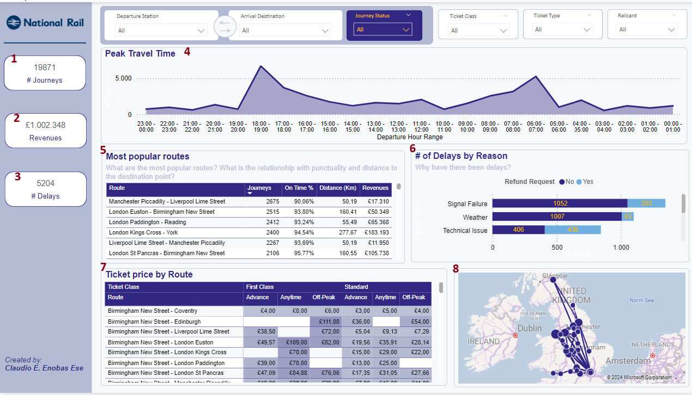

National Rail Analysis
The project focus on NationalRail's data for the identification of key insights about how the trains work in England, Scotland, and Wales.

Objectives
The main objectives of this project are:
- Discovering busy routes
- Pinpointing peak travel times
- Analyzing ticket revenues
- Assessing on-time performance
Data Description
The dataset contains mock train ticket sales for National Rail in the UK, covering the period from January to April 2024. It includes detailed information on:
- Type of Ticket: The category of each ticket sold.
- Journey Date & Time: The specific date and time for each journey.
- Departure & Arrival Stations: The starting and ending points of each journey.
- Ticket Price: The cost of each ticket.
- Additional Details: Any other relevant information associated with the train ticket sales. The dataset was initially fairly clean but incomplete, lacking the coordinates for various railway stations. These coordinates were obtained from the following source: UK Train Station Locations
Analysis

- Number of Journeys: A KPI displaying the total number of journeys.
- Revenues: A KPI showing the total revenue generated.
- Number of Delays: A KPI indicating the total number of delays.
- Peak Travel Time: A line chart illustrating the time ranges (e.g., 18:00 - 19:00) with peak travel activity.
- Most Popular Routes: A table listing the most frequently traveled routes.
- Number of Delays by Reason: A horizontal histogram presenting the total number of delays categorized by their reasons, also indicating if a refund request was made by the customer.
- Ticket Price by Route: A table detailing the ticket prices for each route, segmented by Ticket Class (First and Second Class) and Ticket Type (Advance, Anytime, and Off-Peak).
- Visual Map: A visual representation of all the routes, providing a geographic overview of the train journeys.
Results
- Most Popular Route: The route from Manchester Piccadilly to Liverpool Lime Street is the most popular, with 90.06% of trains arriving on time. The distance between these stations is approximately 50.19 km.
- Peak Travel Times: Peak travel periods are observed between 06:00 - 07:00 and 18:00 - 19:00.
- Revenue: National Rail earned approximately £1 million from train ticket sales over the four-month period.
- Most Punctual Route: The route from Liverpool Lime Street to Leeds, approximately 103 km long, is the most punctual, with no recorded delays. This conclusion is supported by the number of journeys made on this route.
Future Work
- Improve Data Collection:
- Environmental Data: Integrate weather and environmental data to better understand the impact on train delays and service disruptions.
- Predictive Analytics
- Delay Prediction: Develop predictive models to forecast train delays based on historical data and real-time factors.
- Route Optimisation
- Efficiency Analysis: Analyze and optimize train schedules to reduce travel times and improve punctuality.
The entire project can be downloaded from the this repository on Github.